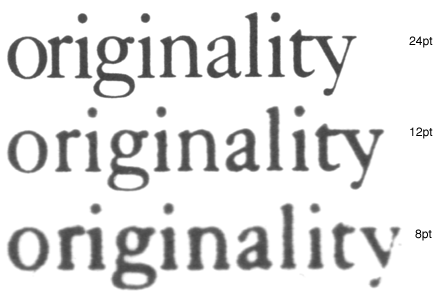

MetaFont
フォントに対する標準的変形
MetaFont ダイアログ (明らかにこの名前は Knuth の仕事からの借り物です) は、フォントの重要な特徴を検出し、それを変更できるようにしようと試みます。これは TeX の .mf ファイルを読み込みません。検索する機能は以下のとおりです:
-
x ハイト
フォント全体に通底する属性で、x ハイトをキャップハイトに比べて相対的に大きくすると、多くの場合フォントが大きなポイントサイズをもっているように見えます (FontForge はキャップハイト、アセンダおよびディセンダも調べますが、これらを変更するのはあまり一般的ではありません。それは実現可能ではあるでしょうが) -
ステムとその幅
ステムの幅を変更すると、フォントがより太く、またはより細くなります。 -
カウンタとその幅 (カウンタとは、ステム間のホワイトスペースです)
カウンタの幅を変更すると、フォントがエキスパンデドまたはコンデンストに変わります。 -
左右のサイドベアリング
カウンタと同様にふるまいます。
おそらく、結果は常に人間の目で確認してから修正を施す必要があるでしょう。とは言え、これらはフォントの属性を変更するのに助けとなるでしょう。現時点では、このコマンドは非常に原始的です。
これはサンセリフの、傾いていないフォントにおいて最もうまく“働き”ます。
ボールド
ボールドフォントはノーマルフォントよりも太いステムをもち、わずかに幅が広げられています。Knuth の Computers & Typesetting では、ボールドフォントはノーマルフォントの約1.6倍 (1.68倍(12pt)〜1.5倍(5pt)) のステム幅をもっています。これは、Microsoft による 700/400 (700 はボールドフォントのウェイトを表す数値で、400 はノーマルフォントのウェイトを表す数値です) という比率が示唆する 1.75 という値とほぼ同じです。
Knuth の Computer Modern Bold Extended Roman では、“m”のグリフは Computer Modern Roman の“m”の 1.15 倍に広げられており、x ハイトは 1.03 倍高くなっています。
| フォント | Bold/Regular のステムの比率 | DemiBold/Regular の比率 | 幅の拡大率 | Bold のセリフ高/Regular のセリフ高 | Bold のセリフ幅/Regular |
| Arial | 1.5 | 1 | |||
| Times New Roman | 1.7 | 1 | .98 | ||
| Computer Modern Roman | 1.68(12ptの時)〜1.5(5ptの時) | 1.15 | |||
| Adobe Helvetica | 1.6 | ||||
| Adobe Times | 1.56 | 1.17 | 1.10 | 0.97 | |
| Garamond Antiqua | 1.5 | 1.05 | 0.90 | ||
ポイントサイズ
PostScript にしろ TrueType にしろ任意のポイントサイズで描けるわけですから、一見して、これは他の変形とはまったく別問題のように見えます。しかし伝統的には、ポイントサイズが小さくなるにつれてボールドネス (ステムの太さ) をわずかに増やし、カウンタとサイドベアリングもそれに合わせて変化させていました。金属活字では一般に、フォント 1 つに対して 3 個の原字が用いられていました。1 個は 10 ポイント未満のサイズ用、1 個は 10, 11 および 12 ポイント用、もう 1 個は (12 ポイントを超える) ディスプレイサイズ用でした。ほとんどの計算機用ベクトルフォントはこの変化を見せませんが、Knuth の Computer Modern フォントは以下のように連続的に変化します:
| 17pt | 12pt | 10pt | 9pt | 8pt | 7pt | 6pt | 5pt | (cmr 12pt に対する 12pt 時の値) | ||
|---|---|---|---|---|---|---|---|---|---|---|
| cmr | 83% | 100% | 109% | 116% | 120% | 124% | 130% | 139% | Computer Modern Roman | 100% |
| cmti | 100% | 106% | 112% | 115% | 122% | Computer Modern Text Italic | 94% | |||
| cmbx | 100% | 105% | 108% | 112% | 117% | 120% | 123% | Computer Modern Bold Extended | 170% | |
| cmtt | 100% | 109% | 116% | 120% | Computer Modern Typewriter | 100% | ||||
| cmss | 99% | 100% | 102% | 109% | 113% | Computer Modern Sans Serif | 120% |
| 17pt | 12pt | 10pt | 9pt | 8pt | 7pt | 6pt | 5pt | ||
|---|---|---|---|---|---|---|---|---|---|
| cmr | 1.9 | 2.3 | 2.5 | 2.67 | 2.75 | 2.85 | 3 | 3.2 | Computer Modern Roman |
| cmti | 2.17 | 2.3 | 2.44 | 2.5 | 2.64 | Computer Modern Text Italic | |||
| cmbx | 3.9 | 4.1 | 4.2 | 4.37 | 4.57 | 4.67 | 4.8 | Computer Modern Bold Extended | |
| cmtt | 2.3 | 2.5 | 2.67 | 2.75 | Computer Modern Typewriter | ||||
| cmss | 2.71 | 2.75 | 2.8 | 3 | 3.12 | Computer Modern Sans Serif | |||
| cmssi | 2.8 | Computer Modern Slanted Sans Serif |

左の図は同じ単語の例 (フォント見本帖から取りました) を 3 つの異なるフォントサイズ (8, 12 および 24 ポイント) で印刷した物を同じサイズに拡大した物です。最も明瞭な違いは、小さなポイントサイズではグリフが比例的に幅広になっていることです。文字のステムの違いはそれほど明白ではありません:
| 24pt | 12pt | 8pt | |
|---|---|---|---|
| “n”のステム (12pt との相対値) | 89% | 100% | 117% |
| “n”のカウンタ (12pt との相対値) | 104% | 100% | 89% |
| “Originarity”の幅 (12pt との相対値) | 93% | 100% | 104% |
スモールキャップ (小型大文字)
スモールキャップフォントは大文字を x ハイトに縮小変換 (結果として、アセンダをもたない小文字と同じ高さになります) してからステム幅を小文字のステム幅と調和するように調整することによって作成されます。
イタリック
イタリック変換には少なくとも 4 つの部分が含まれます: 小文字の字形の変更、傾き の追加、そしてコンデンス化 (字幅縮小) と垂直ステムの縮小です。
| イタリック角 | コンデンス化率 | ステム幅の変更 | |
| Computer Modern Text Italic | 14° | 91% | 94% |
| Times New Roman | 16° | 100% | 91% |
| Adobe Times | 15 | 100% | 92% |
Galliard における字形の変化:

Caslon における字形の変化:
(これらのグリフは形の変化をいっそう明らかにするために傾きを垂直に戻してあります)。
キリル文字における字形の変化:
(これらのグリフも傾きを戻してあります。)
これは完全なリストではありませんが、ここに示したのはこの種の変換のうち最も顕著な特徴があるものです。
オブリーク (傾斜体)
オブリーク変換は単純な傾きを加えるだけです。
| Computer Modern Slanted Sans Serif | 9.5° |
| Arial Italic (実際にはオブリーク) | 12° |
| Adobe Helvetica Oblique | 12° |
エクステンディド/コンデンスト
これら 2 つの変換では、ステム幅は一定に保持されますが、水平方向のカウンタサイズとサイドベアリングは増やされます (コンデンストの場合減らされます)。